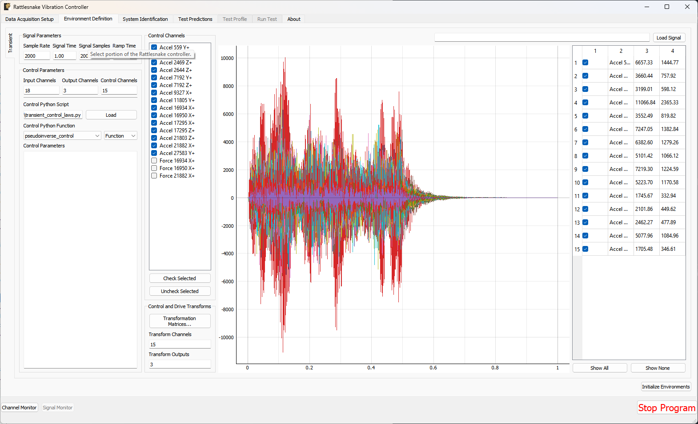
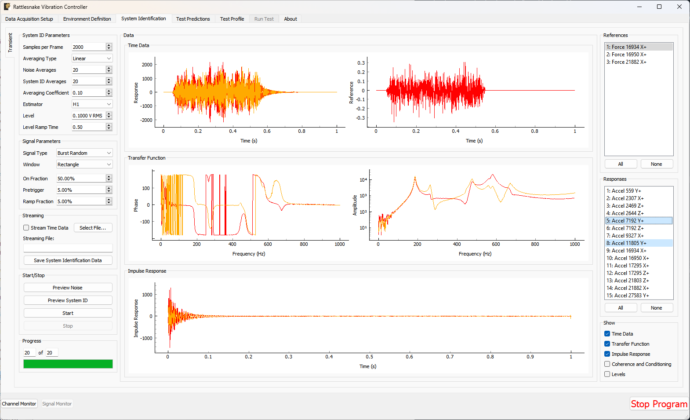
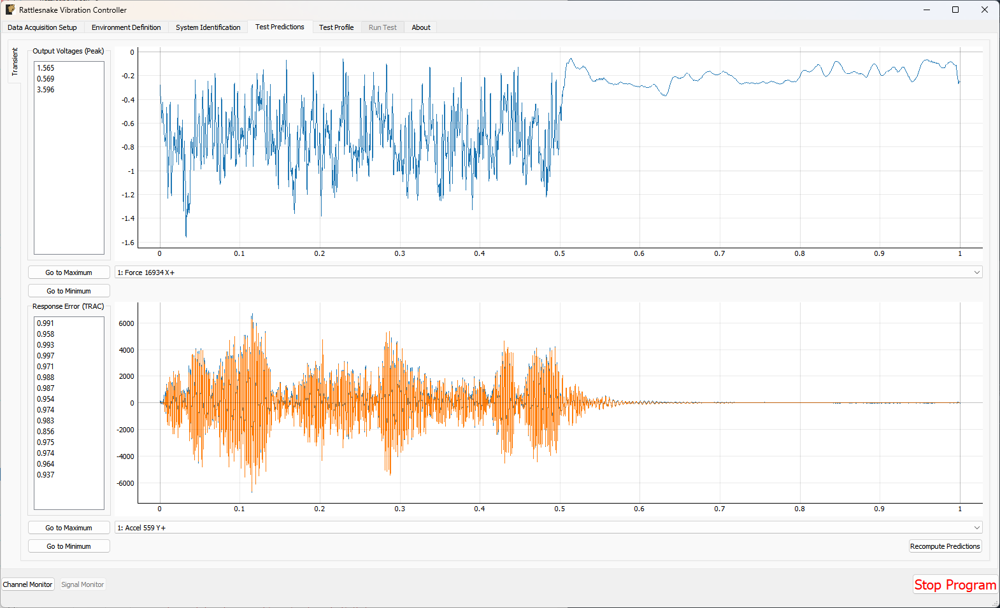
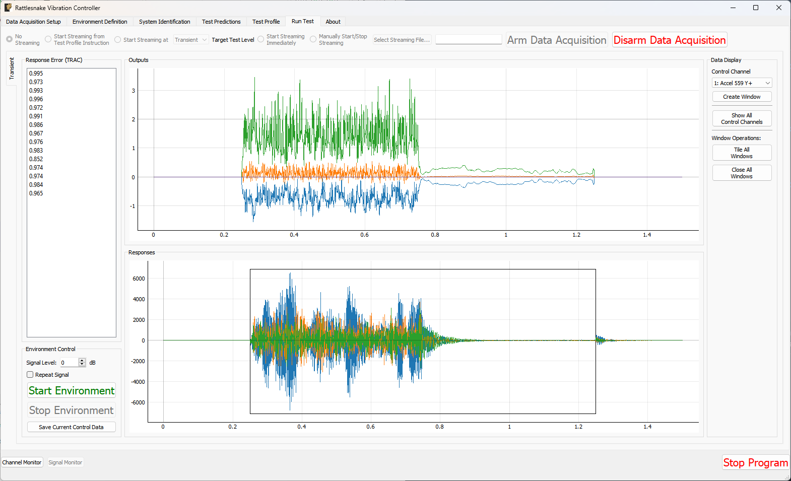
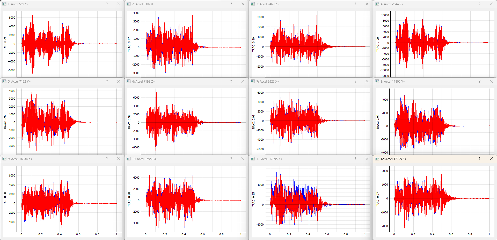

13. Multiple Input/Multiple Output Transient Control
The MIMO Transient environment aims to control the vibration response of a component to a specific time history by creating output signals with the correct levels and phasing. The governing equation for MIMO Transient control is
where the frequency spectrum matrix of the responses result from some signals exciting the structure represented by transfer function matrices . In a typical transient control problem, the control system tries to compute the a signal with spectrum matrix that best reproduces the desired response with frequency spectrum .
13.1. Signal Definition
The first step in defining a transient control problem is the definition of the response signal that is desired. Rattlesnake accepts the specification in the form of a 2D array consisting of a time response of one or more channels in the test. Signals can be loaded from Numpy *.npy or *.npz files or Matlab *.mat files. Both Matlab *.mat and Numpy *.npz files should contain the following data members:
- signal: A array containing the time signal the controller will try to reproduce on the test article. For
*.npyfiles which do not have fields, the signal array is stored directly to the file. - t: A array of times corresponding to columns of the
signalfield. If not specified (either by not including atfield in a*.mator*.npzfile or by using an*.npyfile), thesignalwill be assumed to be at the sample rate defined in the controller. Iftis specified but is not at the sample rate of the controller, the signal will be linearly interpolated to be at the sample rate of the controller.
The ordering of the rows of the array defining the signal is the same order as the control channels in the Channel Table on the Data Acquisition Setup tab that are selected as control channels on the Environment Definition tab. The specification is defined in the engineering units specified by the Engineering Unit column of the channel table for the control channels.
13.2. Defining the MIMO Transient Environment in Rattlesnake
In addition to the specification, there are a number of signal processing parameters that are used by the MIMO Transient environment. These, along with the specification, are defined on the Environment Definition tab in the Rattlesnake controller on a sub-tab corresponding to a MIMO Transient environment. Figure 13-1 shows a MIMO Transient sub-tab. The following subsections describe the parameters that can be specified, as well as their effects on the analysis.

Figure 13-1. GUI used to define a MIMO Transient environment.13.2.1. Signal Parameters
The Signal Parameters section of the MIMO Transient definition sub-tab consists of the following parameters:
- Sample Rate: The global sample rate of the data acquisition system. This is set on the
Data Acquisition Setuptab, and displayed here for convenience as a read-only value. - Signal Time: The total time it will take to play the signal that the controller will attempt to reproduce on the test article.
- Signal Samples: The number of time steps in the signal that the controller will attempt to reproduce on the test article.
- Ramp Time: The time taken to ramp the signal to zero when the signal is stopped, preventing “Hard Stops” that could damage equipment if the test is aborted midway through.
13.2.2. Control Channels
The Control Channels list allows users to select the channels in the test that will be used by the environment to perform control calculations. These are the channels that will match the rows and columns of the specification file.
13.2.3. Control Parameters
The Control Parameters section of the MIMO Transient definition sub-tab consists of the following parameters:
- Input Channels: The total number of channels being measured by the Rattlesnake, including response channels and output channels. This is a computed quantity presented for convenience, so the user cannot modify it directly.
- Output Channels: The number of excitation signals being used to control the vibration response of this environment. This is a computed quantity presented for convenience, so the user cannot modify it directly.
- Control Channels: The number of response channels being used in the control. This is a computed quantity presented for convenience, so the user cannot modify it directly.
The Control Parameters section of the MIMO Transient definition sub-tab also includes functionality for loading in custom control laws. See Section 13.7. Writing a Custom Control Law for information on defining a custom transient control law.
- Control Python Script: The Python script containing a custom control law that is currently loaded into the Rattlesnake controller.
- Load: Pressing this button will bring up a file selection dialog to load in a new Python script containing a custom control law.
- Control Python Function: This selector presents the functions, generators, and classes within the loaded Python script that can be used as custom control laws.
- Control Parameters: This text box allows arbitrary input to be passed to custom control laws as a string. It is up to the control law to specify what this extra input must be and parse whatever input the user gives it.
13.2.4. Control and Drive Transforms
The Control and Drive Transforms section of the MIMO Random Vibration definition sub-tab consists of the following parameters:
- Transformation Matrices...: Selecting this button will bring up the transformation matrices dialog box, which allows the user to specify linear transformations between the physical responses and excitation signals and virtual responses and excitation signals. See Section 12.8. Using Transformation Matrices for more information.
- Transform Channels: The number of virtual control degrees of freedom after applying transformation matrices. This is a computed quantity presented for convenience, so the user cannot modify it directly.
- Transform Outputs: The number of virtual excitation devices after applying transformation matrices. This is a computed quantity presented for convenience, so the user cannot modify it directly.
Note that if Transformation matrices are defined, the number of control channels ends up being the number of rows of the Response Transformation Matrix, rather than the number of physical control channels. The number of physical control channels will be equal to the number of columns of the transformation matrix. The number of rows of the specification loaded should be equal to the number of rows in the transformation.
13.2.5. Signal Specification
The control signal is loaded and displayed on the right side of the MIMO Transient definition tab:
- Load Signal: A button that when pressed will bring up a file selection dialog to read in a specification from a Numpy
*.npzor*.npyor Matlab*.matfile. - Signal Plot: A visualization of the signals loaded into the controller.
- Signal Table: A table showing statistics of each of the signals loaded into the controller. The user can also select which signals to plot using the checkboxes in the table.
13.3. System Identification for the MIMO Transient Environment
When all environments are defined and the Initialize Environments button is pressed, Rattlesnake will proceed to the next phase of the test, which is defined on the System Identification tab.
MIMO Transient requires a system identification phase to compute the matrix used in the control calculations of equation (12.1). Unlike the MIMO Random Vibration environment, the MIMO Transient environment's system identification phase can have a number of samples per measurement frame that is not equal to the length of the signal. Control laws written for this environment must be able to handle this, either by doing a COLA scheme or interpolating the FRF. Figure 13-2 shows the GUI used to perform this phase of the test. Given the nature of the MIMO Transient environment, it may be useful to visualize impulse response functions as the system identification is proceeding.

Figure 13-2. System identification GUI used by the MIMO Transient environment.Rattlesnake's system identification phase will start with a noise floor check, where the data acquisition records data on all the channels without specifying an output signal. After the noise floor is computed, the system identification phase will play out the specified signals to the excitation devices, and transfer functions will be computed using the responses of the control channels to those excitation signals. Section 3.4. System Identification describes the System Identification tab and its various parameters and capabilities.
13.4. Test Predictions for the MIMO Transient Environment
Once the system identification is performed, a test prediction will be performed and results displayed on the Test Predictions tab, shown in Figure 13-3. This is meant to give the user an idea of the test feasibility. The top portion of the window displays excitation information, including peak signal levels required as well as the excitation time history that will be output. The bottom portion of the window displays the predicted responses compared to the specification as well as the TRAC between the signals. The TRAC is a metric that compares two time signals, and has a value of 1 if the signals are identical or 0 if the signals are not related.

Figure 13-3. Test prediction GUI which gives the user some idea of the test feasibility.13.5. Running the MIMO Transient Environment
The MIMO Transient environment is then run on the Run Test tab of the controller.
With the data acquisition system armed, the environment can be started manually with the Start Environment button. Once running, it can be stopped manually with the Stop Environment button. With the data acquisition system armed and the environment run, the GUI looks like Figure 13-4.

Figure 13-4. GUI for running the MIMO Transient environment.There are operations that can be performed when setting up and running the MIMO Transient environment, and many visualization operations as well.
13.5.1. Test Level
The MIMO Transient Environment allows scaling of the test by modifying the Signal Level selector on the Run Test tab. The Signal specifies the scaling in decibels relative to the specification level, which is 0 dB. Note that all data and visualizations on the Run Test window are scaled back to full level, so users should not be surprised if for example the signals shown in the Outputs or Responses plots do not change significantly with test level. Unlike the MIMO Random Vibration environment, the MIMO Transient environment does not allow changing test level while the environment is active.
13.5.2. Repeating a Signal
The MIMO Transient environment also has the capability to repeat a signal continuously if the Repeat Signal checkbox is checked. If this is the case, users will be required to stop the environment by clicking the Stop Environment button. If the controller is not set to repeat, the environment will stop automatically after the signal has been output one time.
13.5.3. Test Metrics and Visualizations
The MIMO Transient environment displays the output signals in the Outputs plot and the responses to those signals at the control channels in the Responses plot. The controller will identify the position of the control signal in the response signal by using a correlation, and will draw a black box around that portion of the response signal, as shown in Figure 13-4. The errors in the response channels are reported as a TRAC value between the signal measured and the specification desired.
To interrogate specific channels, the Data Display section of the Run Test can be used. The specific control channel to visualize can be selected using Control Channel selector. Pressing the Create Window button then creates the specified plot.
Some convenience operations are also included to visualize all channels. The Show All Channels button will bring up one window per control channel. Be aware that showing a large number of channels can easily overwhelm the computer with plotting operations causing the GUI to become unresponsive, so use this operations with caution. Figure 13-5 shows an example displaying all channels for a test with six control degrees of freedom.

Figure 13-5. Visualizing individual channels' time response.Further convenience operations are available in the Window Operations: section. Pressing Tile All Windows will rearrange all channel windows neatly across the screen. Pressing Close All Windows will close all open channel windows.
13.6. Output NetCDF File Structure
When Rattlesnake saves data to a netCDF file, environment-specific parameters are stored in a netCDF group with the same name as the environment name. Similar to the root netCDF structure described in Section 3.8, this group will have its own attributes, dimensions, and variables, which are described here.
13.6.1. NetCDF Dimensions
- signal_samples: The number of time samples in the specification signal provided to the MIMO Transient environment.
- specification_channels: The number of channels in the specification signal provided to the MIMO Transient environment.
- control_channels: The number of physical channels used for control. Note that this may be different from the
specification_channelsdue to the presence of a transformation matrix. - response_transformation_rows: The number of rows in the response channel transformation. This is not defined if no response transformation is used.
- response_transformation_cols: The number of columns in the response channel transformation. This is not defined if no response transformation is used.
- output_transformation_rows: The number of rows in the output transformation. This is not defined if no output transformation is used.
- output_transformation_cols: The number of columns in the output transformation. This is not defined if no output transformation is used.
13.6.2. NetCDF Attributes
- sysid_frame_size: The number of samples per measurement frame in the system identification
- sysid_averaging_type: The type of averaging used in the system identification, linear or exponential
- sysid_noise_averages: The number of measurement frames acquired for the noise floor calculation
- sysid_averages: The number of measurement frames acquired for the system identification calculation
- sysid_exponential_averaging_coefficient: The weighting coefficient used for new frames in the exponential averaging scheme
- sysid_estimator: The FRF estimator used to compute the transfer functions during the system identification
- sysid_level: The level used by the system identification in volts RMS.
- sysid_level_ramp_time: The time to ramp up to the test level when starting and ramp back to zero when stopping the system identification
- sysid_signal_type: The signal type used by the system identification
- sysid_window: The window function applied to the time data during the system identification
- sysid_overlap: The overlap fraction between measurement frames used for system identification
- sysid_burst_on: The fraction of a measurement frame that a burst is active for burst random excitation during system identification
- sysid_pretrigger: The fraction of a measurement used as a pre-trigger for burst random excitation during system identification
- sysid_burst_ramp_fraction: The fraction of a measurement frame used to ramp the burst up to full level and back to zero
- test_level_ramp_time: The time to ramp to the test level and back to zero
- control_python_script: The path to the Python script used to control the MIMO Random Vibration environment
- control_python_function: The function (or class or generator function) in the Python script used to control the MIMO Transient environment
- control_python_function_type: The type of the object used for the control law (function, generator, or class)
- control_python_function_parameters: The extra parameters passed to the control law.
13.6.3. NetCDF Variables
- control_signal: The control signal used by the MIMO Transient environment Type: 64-bit float; Dimensions:
specification_channelssignal_samples - response_transformation_matrix: The response transformation matrix. This is not defined if no response transformation is used. Type: 64-bit float; Dimensions:
response_transformation_rowsresponse_transformation_cols - output_transformation_matrix: The output transformation matrix. This is not defined if no output transformation is used. Type: 64-bit float; Dimensions:
output_transformation_rowsoutput_transformation_cols - control_channel_indices: The indices of the active control channels in the environment. Type: 32-bit int; Dimensions:
control_channels
13.6.4. Saving Control Data
In addition to time streaming, Rattlesnake's MIMO Transient environment can also save the previous control data directly to the disk by clicking the Save Current Control Data. The control data is stored in a NetCDF file similar to the time streaming data. The primary difference is that the control data is time-aligned to the specification, so users don't need to worry about extracting the signal from an a time stream and trying to align it with specification. The control data also saves out the information from the system identification, including FRF and CPSD matrices.
The two additional dimensions are:
- drive_channels: The number of drive channels active in the environment.
- fft_lines: The number of frequency lines in the spectral quantities.
There are also several additional variables to store the spectral data:
- frf_data_real: The real part of the most recently computed value for the transfer functions between the excitation signals and the control response signals. NetCDF files cannot handle complex data types so real and imaginary parts are split into two variables. Type: 64-bit float; Dimensions:
fft_linesspecification_channelsdrive_channels - frf_data_imag: The imaginary part of the most recently computed value for the transfer functions between the excitation signals and the control response signals. NetCDF files cannot handle complex data types so real and imaginary parts are split into two variables. Type: 64-bit float; Dimensions:
fft_linesspecification_channelsdrive_channels - frf_coherence: The multiple coherence of the control channels computed during the test. Type: 64-bit float; Dimensions:
fft_linesspecification_channels - response_cpsd_real: The real part of the CPSD matrix at the control channels from the system identification. NetCDF files cannot handle complex data types so real and imaginary parts are split into two variables. Type: 64-bit float; Dimensions:
fft_linesspecification_channelsspecification_channels - response_cpsd_imag: The imaginary part of the CPSD matrix at the control channels from the system identification. NetCDF files cannot handle complex data types so real and imaginary parts are split into two variables. Type: 64-bit float; Dimensions:
fft_linesspecification_channelsspecification_channels - drive_cpsd_real: The real part of the CPSD matrix at the excitation channels from the system identification. NetCDF files cannot handle complex data types so real and imaginary parts are split into two variables. Type: 64-bit float; Dimensions:
fft_linesdrive_channelsdrive_channels - drive_cpsd_imag: The imaginary part of the CPSD matrix at the excitation channels from the system identifications. NetCDF files cannot handle complex data types so real and imaginary parts are split into two variables. Type: 64-bit float; Dimensions:
fft_linesdrive_channelsdrive_channels - response_noise_cpsd_real: The real part of the CPSD matrix at the control channels during the noise floor measurement that occurred during system identification. NetCDF files cannot handle complex data types so real and imaginary parts are split into two variables. Type: 64-bit float; Dimensions:
fft_linesspecification_channelsspecification_channels - response_noise_cpsd_imag: The imaginary part of the CPSD matrix at the control channels during the noise floor measurement that occurred during system identification. NetCDF files cannot handle complex data types so real and imaginary parts are split into two variables. Type: 64-bit float; Dimensions:
fft_linesspecification_channelsspecification_channels - drive_noise_cpsd_real: The real part of the CPSD matrix at the excitation channels during the noise floor measurement that occurred during system identification. NetCDF files cannot handle complex data types so real and imaginary parts are split into two variables. Type: 64-bit float; Dimensions:
fft_linesdrive_channelsdrive_channels - drive_noise_cpsd_imag: The imaginary part of the CPSD matrix at the excitation channels during the noise floor measurement that occurred during system identification. NetCDF files cannot handle complex data types so real and imaginary parts are split into two variables. Type: 64-bit float; Dimensions:
fft_linesdrive_channelsdrive_channels - control_response: The time response of the system aligned in time to the specification. Type: 64-bit float; Dimensions:
specification_channelssignal_samples - control_drives: The drive signals aligned in time to the specification. Type: 64-bit float; Dimensions:
drive_channelssignal_samples
13.7. Writing a Custom Control Law
The flexibility of the Rattlesnake framework is highlighted by the ease in which users can implement and iterate on their own ideas. For the MIMO Transient control type, users can implement custom control laws using a custom Python function, or alternatively a generator function or class which allow state to be maintained between function calls. This section will provide instructions and examples for implementing a custom control law.
The controller will provide various data types to the control law functions which are:
- sample_rate: The sample rate of the acquisition portion of the controller; real scalar integer
- specification_signals: The target signal for the control channels; real 2D array ()
- frequency_spacing: The frequency spacing of the transfer function array; real scalar float
- transfer_function: The current estimate of the transfer function between the control responses and the output voltages; complex 3D array ()
- noise_response_cpsd: The levels and correlation of the noise floor measurement on the control channels obtained during system identification; complex 3D array ()
- noise_reference_cpsd: The levels and correlation of the noise floor measurement on the excitation channels obtained during system identification; complex 3D array ()
- sysid_response_cpsd: The levels and correlation of the control channels obtained during system identification; complex 3D array ()
- sysid_reference_cpsd: The levels and correlation of the noise floor measurement on the excitation channels obtained during system identification; complex 3D array ()
- multiple_coherence: The multiple coherence for each control channel; real 2D array ()
- frames: The number of measurement frames acquired so far, used to compute various parameters in the control law. This can be compared to
total_framesto determine if a full set of measurement frames has been acquired, or if the estimation of the various parameters could improve with continued averaging; real scalar integer - total_frames: The total number of frames used to compute the CPSD and FRF matrices; real scalar integer
- output_oversample_factor: Some hardware devices and settings within Rattlesnake require output signals from Rattlesnake to be oversampled compared to the input samples. For example, on the LAN-XI hardware, the slowest output rate is four times larger than the slowest acquisition rate. This argument tells the control law the factor by which the output returned from the controller is oversampled compared to the acquisition; real scalar integer
- extra_parameters: Extra parameters provided to the controller; string
- last_excitation_signals: The most recent output signal, which can be used for error-based control; real 2D array ()
- last_response_signals: The most recent responses to the last output signals, which can be used for error-based control; real 2D array ()
where size is the number of time samples in the control signal, is the number of frequency lines in the transfer function matrix, is the number of control channels, and is the number of output signals. Note that the values passed into the function may be defined using arbitrary variable names (e.g. transfer_function may be instead called H, or any other valid variable name); however, the order of the variables passed into each function will always be constant.
13.7.1. Defining a control law using a Python function
Python functions are the simplest approach to define a custom control law that can be used with the Rattlesnake software; however, they are limited in that a function's state is completely lost when a function returns. Still, they can be used to implement relatively complex control laws as long as no state persistence is required.
A Python function used to define a MIMO Transient control law in Rattlesnake would have the following general structure within a Python script.
# Any module imports, initialization code, or helper functions would go here
# Now we define the control law. It always receives the same arguments from the controller.
def control_law(
sample_rate,
specification_signals, # Signal to try to reproduce
frequency_spacing,
transfer_function, # Transfer Functions
noise_response_cpsd, # Noise levels and correlation
noise_reference_cpsd, # from the system identification
sysid_response_cpsd, # Response levels and correlation
sysid_reference_cpsd, # from the system identification
multiple_coherence, # Coherence from the system identification
frames, # Number of frames in the CPSD and FRF matrices
total_frames, # Total frames that could be in the CPSD and FRF matrices
output_oversample_factor, # Oversample factor to output
extra_parameters = '', # Extra parameters for the control law
last_excitation_signals = None, # Last excitation signal for drive-based control
last_response_signals = None, # Last response signal for error correction
):
# Code to perform the control would go here
# output_signal = ...
# Finally, we need to return an output signal matrix
return output_signal
Listing 13.1. General Python function structure for defining a custom Transient control law called control_law in Rattlesnake
The function must return an output_signal, which is a 2D array with size () where is the number of samples in the specification signal times the output_oversample_factor.
One example is shown to demonstrate how a Transient control law may be written.
13.7.1.1. Pseudoinverse Control
Perhaps the simplest strategy to perform MIMO Transient control is to simply invert the transfer function matrix to recover the least-squares solution of the optimal output signal from the desired responses. This example will demonstrate that approach with some additional arguments that may improve the control.
The mathematics for this control strategy are relatively simple; pre-multiply the spectra of the desired responses by the pseudoinverse () of the transfer function matrix . This calculation is performed for each frequency line.
The implementation details are a bit more complex than this formula would reveal, as the controller gives and wants returned the time signals and not the spectra. This means the FFT must be computed to transform to the frequency domain for the calculations to be performed, and the IFFT must be computed to return to the time domain. Additionally, to handle the potential for oversampling the output, the drive signal is zero-padded to up-sample the signal appropriately. We must also handle the case where the number of samples in the system identification is not the same as the number of samples in the control signal. We will finally add optional arguments that may be specified using key-value pairs separated by a colon (e.g. the rcond parameter could be specified as rcond:1e-5 to specify a singular value threshold of 10,000 in the inverse). In Python code, the above mathematics and implementation details would look like
import numpy as np # Import numpy to get access to its function
# Parse the input arguments in extra_parameters
rcond = 1e-15
zero_impulse_after = None
# Split it up into lines
for entry in extra_parameters.split('\n'):
try:
# For each entry, split the key from the value using the colon
field,value = entry.split(':')
# Strip any whitespace
field = field.strip()
# Check the field to figure out which value to assign
if field == 'rcond':
rcond = float(value)
elif field == 'zero_impulse_after':
zero_impulse_after = float(value)
else:
# Report if we cannot understand the parameter
print('Unrecognized Parameter: {:}, skipping...'.format(field))
# Compute impulse responses using the IFFT of the transfer function
# We will zero pad the IFFT to do interpolation in the frequency domain
# to match the length of the required signal
impulse_response = np.fft.irfft(transfer_function,axis=0)
# The impulse response should be going to zero at the end of the frame,
# but practically there may be some gibbs phenomenon effects that make the
# impulse response noncausal. If we zero pad, this might be wrong. We
# therefore give the use the ability to zero out this non-causal poriton of
# the impulse response.
if zero_impulse_after is not None:
# Remove noncausal portion
impulse_response_abscissa = np.arange(impulse_response.shape[0])/sample_rate
zero_indices = impulse_response_abscissa > zero_impulse_after
impulse_response[zero_indices] = 0
# Zero pad the impulse response to create a signal that is long enough for
# the specification signal
added_zeros = np.zeros((specification_signals.shape[-1]-impulse_response.shape[0],)
+ impulse_response.shape[1:])
full_impulse_response = np.concatenate((impulse_response,added_zeros),axis=0)
# Compute FRFs using the FFT from the impulse response. This is now
# interpolated such that it matches the frequency spacing of the specification
# signal
interpolated_transfer_function = np.fft.rfft(full_impulse_response,axis=0)
# Perform convolution by frequency domain multiplication
signal_fft = np.fft.rfft(specification_signals,axis=-1)
# Invert the FRF matrix using the specified rcond parameter
inverted_frf = np.linalg.pinv(interpolated_transfer_function,rcond=rcond)
# Multiply the inverted FRFs by the response spectra to get the drive spectra
drive_signals_fft = np.einsum('ijk,ki->ij',inverted_frf,signal_fft)
# Zero pad the drive FFT to oversample to the output_oversample_factor
drive_signals_fft_zero_padded = np.concatenate((drive_signals_fft[:-1],
np.zeros((drive_signals_fft[:-1].shape[0]*(output_oversample_factor-1)+1,)
+drive_signals_fft.shape[1:])),axis=0)
# Finally, take the IFFT to get the time domain signal. We need to scale
# by the output_oversample_factor due to how the IFFT is normalized.
drive_signals_oversampled = np.fft.irfft(
drive_signals_fft_zero_padded.T,axis=-1)*output_oversample_factor
return drive_signals_oversampled
Listing 13.2 Computing the pseudoinverse calculation to solve for a least-squares output spectrum
For users not familiar with Python and its numeric library \inlineCode{numpy}, the following points are clarified
- numpy is imported and assigned to the alias \inlineCode{np}, which lets us just type in
nprather than the longer namenumpywhen we want to accessnumpyfunctions. - To interpolate a function in the frequency domain, we can zero-pad its time response, and to interpolate a function in the time domain, we can zero-pad its frequency response.
- The numpy module has a function
zerosto create an array of zeros and a functionconcatenateto combine two arrays together. These two functions allow us to zero-pad an array. - FFT calculations can be performed using the Fourier Transform package
fftwithinnumpy. We will be using real signals, so we userfftandirfftto do these transforms. - The numpy pseudoinverse function
pinvis stored in the linear algebra packagelinalgwithinnumpy, therefore to accesspinv, we need to callnp.linalg.pinv - The pinv can perform a pseudoinverse on "stacks" of matrices, so even though we are only calling the
pinvfunction once, it is actually performing the pseudoinverse over all frequency lines - The numpy
einsumfunction utilizes a syntax similar to Einstein Summation Notation to perform multiplication and summation over certain dimensions of the arrays.
Wrapping the above code into the function definition from Listing 13.1, the control law can be defined as
import numpy as np
def pseudoinverse_control(
sample_rate,
specification_signals, # Signal to try to reproduce
frequency_spacing,
transfer_function, # Transfer Functions
noise_response_cpsd, # Noise levels and correlation
noise_reference_cpsd, # from the system identification
sysid_response_cpsd, # Response levels and correlation
sysid_reference_cpsd, # from the system identification
multiple_coherence, # Coherence from the system identification
frames, # Number of frames in the CPSD and FRF matrices
total_frames, # Total frames that could be in the CPSD and FRF matrices
output_oversample_factor, # Oversample factor to output
extra_parameters = '', # Extra parameters for the control law
last_excitation_signals = None, # Last excitation signal for drive-based control
last_response_signals = None, # Last response signal for error correction
):
# Parse the input arguments in extra_parameters
rcond = 1e-15
zero_impulse_after = None
# Split it up into lines
for entry in extra_parameters.split('\n'):
try:
# For each entry, split the key from the value using the colon
field,value = entry.split(':')
# Strip any whitespace
field = field.strip()
# Check the field to figure out which value to assign
if field == 'rcond':
rcond = float(value)
elif field == 'zero_impulse_after':
zero_impulse_after = float(value)
else:
# Report if we cannot understand the parameter
print('Unrecognized Parameter: {:}, skipping...'.format(field))
except ValueError:
# Report if we cannot parse the line
print('Unable to Parse Line {:}, skipping...'.format(entry))
# Compute impulse responses using the IFFT of the transfer function
# We will zero pad the IFFT to do interpolation in the frequency domain
# to match the length of the required signal
impulse_response = np.fft.irfft(transfer_function,axis=0)
# The impulse response should be going to zero at the end of the frame,
# but practically there may be some gibbs phenomenon effects that make the
# impulse response noncausal. If we zero pad, this might be wrong. We
# therefore give the use the ability to zero out this non-causal poriton of
# the impulse response.
if zero_impulse_after is not None:
# Remove noncausal portion
impulse_response_abscissa = np.arange(impulse_response.shape[0])/sample_rate
zero_indices = impulse_response_abscissa > zero_impulse_after
impulse_response[zero_indices] = 0
# Zero pad the impulse response to create a signal that is long enough for
# the specification signal
added_zeros = np.zeros((specification_signals.shape[-1]-impulse_response.shape[0],)
+ impulse_response.shape[1:])
full_impulse_response = np.concatenate((impulse_response,added_zeros),axis=0)
# Compute FRFs using the FFT from the impulse response. This is now
# interpolated such that it matches the frequency spacing of the specification
# signal
interpolated_transfer_function = np.fft.rfft(full_impulse_response,axis=0)
# Perform convolution by frequency domain multiplication
signal_fft = np.fft.rfft(specification_signals,axis=-1)
# Invert the FRF matrix using the specified rcond parameter
inverted_frf = np.linalg.pinv(interpolated_transfer_function,rcond=rcond)
# Multiply the inverted FRFs by the response spectra to get the drive spectra
drive_signals_fft = np.einsum('ijk,ki->ij',inverted_frf,signal_fft)
# Zero pad the drive FFT to oversample to the output_oversample_factor
drive_signals_fft_zero_padded = np.concatenate((drive_signals_fft[:-1],
np.zeros((drive_signals_fft[:-1].shape[0]*(output_oversample_factor-1)+1,)
+drive_signals_fft.shape[1:])),axis=0)
# Finally, take the IFFT to get the time domain signal. We need to scale
# by the output_oversample_factor due to how the IFFT is normalized.
drive_signals_oversampled = np.fft.irfft(
drive_signals_fft_zero_padded.T,axis=-1)*output_oversample_factor
return drive_signals_oversampled
Listing 13.3 A pseudoinverse transient control law that can be loaded into Rattlesnake
The requirement that transient control laws are required to be able to oversample their output and may require switching between frequency and time domains mean that the Transient control laws will generally be more complex than the Random Vibration control laws. Note that these computations to oversample the output are still performed by the controller for the Random Vibration environment described in Chapter 12; however, the user does not need to handle them explicitly. In the Transient environment, the user-defined control laws are actually creating the time signals that will be sent to the exciters, so user-defined control laws must handle these computations.
13.7.2. Defining a control law using state-persistent approaches
While the function approach is useful in its simplicity there are certain applications where it is not sufficient. These primarily revolve around cases where there is a significant amount of setup computations or response history that must be tracked. To demonstrate, the Buzz Test approach by Daborn is used for illustration [daborn2014_smarter_dynamic_testing_critical_structures].
The Buzz Test control strategy uses a flat random "buzz" test of the part to determine preferred phasing and coherence between the control degrees of freedom. This "buzz" comes from the system identification phase of the controller, which is one of the inputs to the control law. The specification is then modified so the coherence and phase of the buzz test are matched by the specification. The same pseudoinverse control is then performed as described above, except now with the modified specification.
For this case, it is helpful to define several smaller functions. The first function will compute the coherence of each entry in a CPSD matrix.
A second function is defined that computes the phase of each entry in a CPSD matrix.
We also need a function that can get the APSD functions (diagonal terms) from a CPSD matrix. This can be done very efficiently with the numpy Einstein Summation function einsum.
Now that functions are defined to extract the various parts of a CPSD matrix, a function is defined that assembles a CPSD matrix from those parts.
Then finally, a function is defined that will extract the autospectra from one CPSD matrix and assemble a new CPSD matrix using the coherence and phase from a second CPSD matrix.
In a Buzz Test control law defined using a Python function, the specification is updated using the phase and coherence of the CPSD from the system identification phase, and control is performed using pseudoinverse control to the updated specification.
The issue with this approach is that the helper functions are re-defined each time the control law is called, and the coherence and phase of the system identification CPSD matrix are re-computed each time. It would be much more efficient to define the helper functions once and compute the coherence and phase of the buzz CPSD matrix once. Python generator functions and classes are two ways that this can be achieved.
13.7.2.1. Defining Control Laws with Generator Functions
Generator functions are functions that can be paused and resumed. They are created in Python using the yield keyword. When a generator function is called, it returns a generator object. When the next function is called on the generator object, the generator will execute until it encounters a yield statement. The value yielded is returned, and then the function is paused until the next time next is called on the generator object. State is maintained between calls to next, which makes it a good option for a state-persistent control law.
To implement a control law in Rattlesnake using a generator function, a user would define their generator function to do any pre-computation and then enter an infinite while loop where it would yield a value. Rattlesnake will automatically call next on the generator object and pass the return from the generator to the controller as the updated control value.
A generator function to implement the Buzz Test control strategy would look like the following:
def buzz_test(
specification, # Specifications
warning_levels, # Warning levels
abort_levels, # Abort Levels
transfer_function, # Transfer Functions
noise_response_cpsd, # Noise levels and correlation
noise_reference_cpsd, # from the system identification
sysid_response_cpsd, # Response levels and correlation
sysid_reference_cpsd, # from the system identification
multiple_coherence, # Coherence from the system identification
frames, # Number of frames in the CPSD and FRF matrices
total_frames, # Total frames that could be in the CPSD and FRF matrices
extra_parameters = '', # Extra parameters for the control law
last_response_cpsd = None, # Last Control Response for Error Correction
last_output_cpsd = None, # Last Control Excitation for Drive-based control
):
# Perform setup calculations (e.g. compute coherence and phase of buzz)
buzz_coherence = ...
buzz_phase = ...
while True:
# Re-assemble the specification with the buzz test coherence and phase
modified_spec = ...
# Perform the control
output_cpsd = ...
# update values from the controller by yielding and receiving
(last_response_cpsd,last_output_cpsd) = yield output_cpsd
13.7.2.2. Defining Control Laws using Classes
An alternative, and perhaps more intuitive approach to defining state-persistent control laws is to use a Python class. A class can be thought of as a blueprint for an object. A class will have a constructor (__init__) where any setup operations can be performed, and the state of the object can be stored in the object's properties (e.g. self.buzz_coherence). A class can also have methods, which are functions that can be called that can access the object's properties.
For a Rattlesnake control law defined using a class, the controller will instantiate the class by calling its __init__ method, passing in the arguments that do not change from iteration to iteration. Then, for each iteration of the control loop, the controller will call a method on the class called update, and pass in the arguments that do change from iteration to iteration.
A class to implement the Buzz Test control strategy would look like the following:
class BuzzTest:
def __init__(self,
specification, # Specifications
warning_levels, # Warning levels
abort_levels, # Abort Levels
transfer_function, # Transfer Functions
noise_response_cpsd, # Noise levels and correlation
noise_reference_cpsd, # from the system identification
sysid_response_cpsd, # Response levels and correlation
sysid_reference_cpsd, # from the system identification
multiple_coherence, # Coherence from the system identification
frames, # Number of frames in the CPSD and FRF matrices
total_frames, # Total frames that could be in the CPSD and FRF matrices
extra_parameters = '', # Extra parameters for the control law
):
# Perform setup calculations and store to self
self.buzz_coherence = ...
self.buzz_phase = ...
def update(self,
last_response_cpsd = None, # Last Control Response for Error Correction
last_output_cpsd = None, # Last Control Excitation for Drive-based control
):
# Re-assemble the specification with the buzz test coherence and phase
modified_spec = ...
# Perform the control
output_cpsd = ...
# Return the new output
return output_cpsd
13.8. Using Transformation Matrices
Transformation matrices in the Transient environment behave identically to the the Random Vibration environment. See Section 12.8. Using Transformation Matricesfor more information.
13.9. Identifying the Signal in the Acquired Data
As the environment may be started or stopped arbitrarily during a given test, the Transient environment will need to identify where the signal that was desired actually occurs in the acquired signals.
The Transient environment keeps a buffer twice the length of the desired control signal, so at some point during the acquisition, the entire signal should be within the buffer.
To identify the position of the signal in the buffer, a correlation is performed between the signal that was output to the exciters and the acquired output data. Correlation is performed on the output signal as it is generally read directly back into the controller and does not depend on an accurate prediction of the part's response. The index of the maximum value of the correlation determines the sample closest to the starting point of the signal.
A second, sub-sample alignment is then performed using phases from the FFT of the signal truncated to the starting point and signal length compared to the phases of the specified output. The slope of the phase change vs frequency line is proportional to the sub-sample signal shift.
With the sample and subsample shift of the signal computed for the output signal, the same sample and subsample shift can be can be applied to the signal from the control gauges. This portion of the control channel signals can then be compared directly to the desired signal to judge how well the environment is controlling.